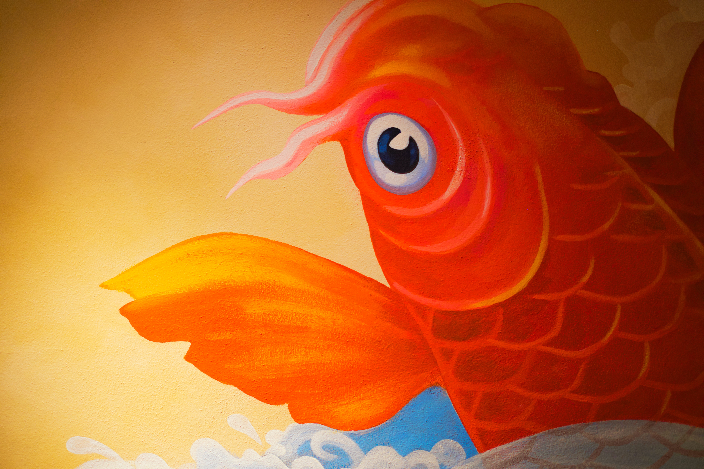
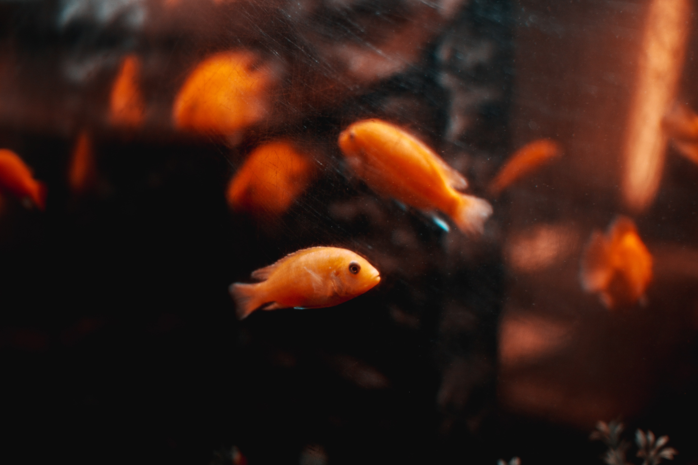

My AWESOME GOLDfish
Various species of carp (collectively known as Asian carp) have been bred and reared as food fish for thousands of years in East Asia. Some of these normally gray or silver species have a tendency to produce red, orange or yellow color mutations; this was first recorded in ancient China, during the Jin dynasty (AD 265–420).[4][5] During the Tang dynasty (AD 618–907), it was popular to raise carp in ornamental ponds and water gardens. A natural genetic mutation produced gold (actually yellowish orange) rather than silver coloration. People began to selectively breed the gold variety instead of the silver variety, keeping them in ponds or other bodies of water. On special occasions at which guests were expected, they would be moved to a much smaller container for display.[6][7] By the Song dynasty (AD 960–1279), the selective domestic breeding of goldfish was firmly established.[8] In 1162, the empress of the Song Dynasty ordered the construction of a pond to collect the red and gold variety. By this time, people outside the imperial family were forbidden to keep goldfish of the gold (yellow) variety, yellow being the imperial color. This is probably the reason why there are more orange goldfish than yellow goldfish, even though the latter are genetically easier to breed.[9] The occurrence of other colors (apart from red and gold) was first recorded in 1276.[citation needed]
My Goldfish is the best ever

